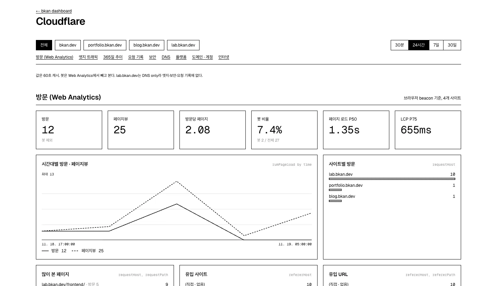
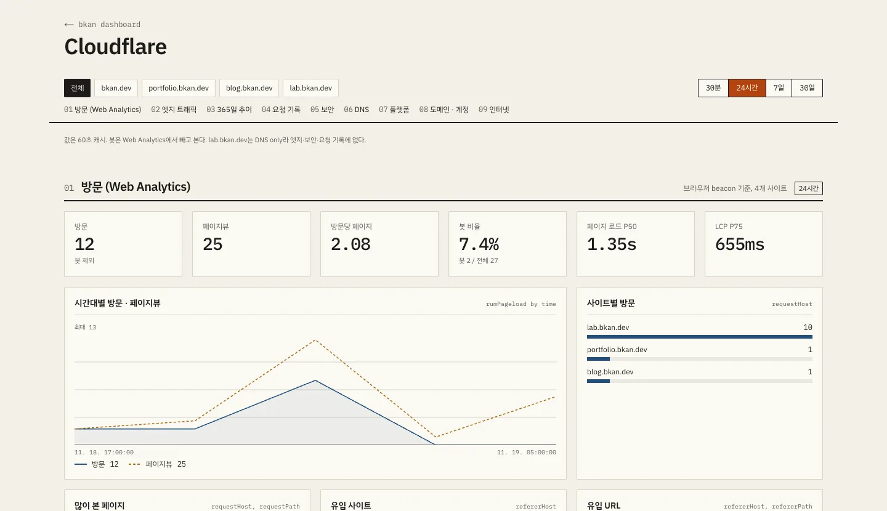
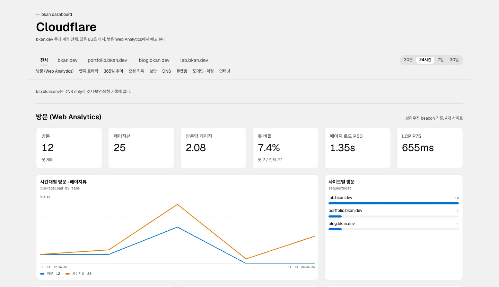
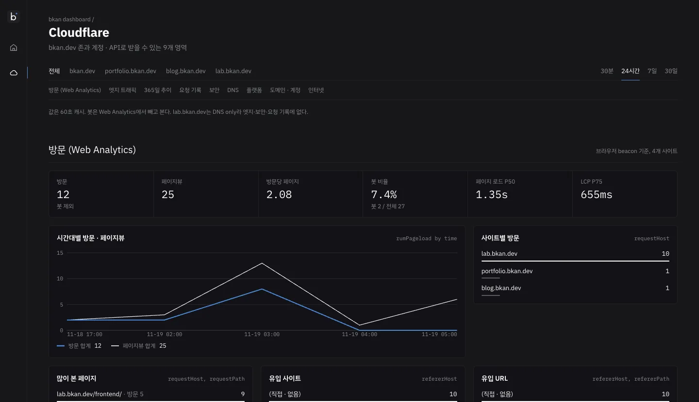
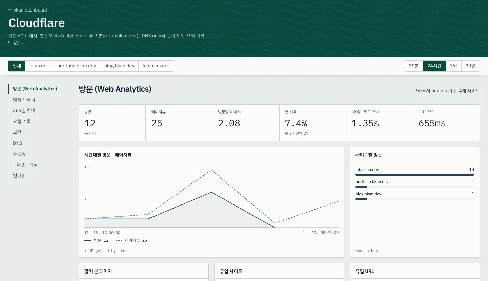
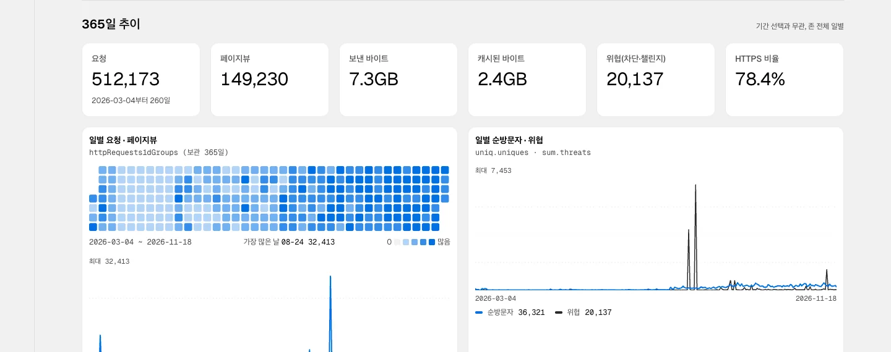
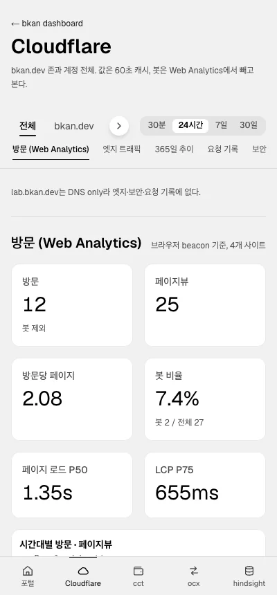

여기까지 온 길
bkan dashboard는 내가 운영하고 쓰는 도구들의 진입점입니다.
그 안의 Cloudflare 페이지는 API로 받을 수 있는 사이트 데이터를 9개 섹션에 모아 둡니다.
-
출발점: 데이터는 다 붙었지만 화면은 와이어프레임이었습니다.
색 없이 검은 선과 빗금, 점선으로만 칸과 계열을 갈랐습니다.
칸마다 어떤 API 필드를 쓰는지 작은 글씨로 적어 두었습니다.
-
디자인을 정하는 방식이 서로 다른 방법 넷을 골라 동시에 시켰습니다.
레퍼런스 카드와 설치해 둔 디자인 스킬에서 골랐습니다.
글로 먼저 정하는 ddd, 남이 만든 부품을 쓰는 Astryx, 취향 라이브러리에서 방향을 뽑는 taste, 지금 화면을 비평부터 하는 impeccable입니다.
안마다 브랜치와 작업 폴더를 따로 주고 Opus 5.5 에이전트를 하나씩 붙였습니다.
데이터와 섹션은 그대로 두고 표현만 다시 그리게 했습니다. -
도중에 셋이 같은 시각에 멈췄습니다.
계정 권한 오류(403)로 세 에이전트가 함께 끊겼고, 하루 뒤 맥락을 잃지 않은 채 이어서 끝냈습니다.
한 에이전트가 자기 서버를 끄려고 넓게 죽이는 명령을 써서 다른 안의 서버까지 내려간 일도 있었습니다. -
네 장을 나란히 놓고 숫자와 화면으로 비교했습니다.
시간·비용·무게를 표로 먼저 보고(아래 비교표), 화면은 다른 PC에서 탭 네 개로 띄워 직접 봤습니다.
Astryx가 무거운 이유는 따로 뜯어 봤습니다. -
Astryx를 바탕으로 고르고 taste의 아이콘 레일을 붙였습니다.
화면은 Astryx가 가장 마음에 들었고, 왼쪽 레일 모양은 taste가 좋았습니다.
-
다른 안에서 다섯 가지를 골라 흡수하고 마스터로 정했습니다.
지금 섹션 표시, 365일 달력, 주 계열 하나만 색, taste 검사기, 결정 현황 표입니다.
taste의 b 표시는 그대로 가져와 파비콘으로도 쓰고, 다른 도구는 새 탭 대신 대시보드 안에서 열게 했습니다.
마지막으로 검사기를 한 바퀴 돌려 11px보다 작은 글자 426곳을 없앴습니다.
네 안의 장단점
같은 화면, 같은 데이터, 같은 브리프로 돌렸습니다.
사진은 모두 1440폭 Cloudflare 페이지 첫 화면입니다.
-
ddd
글 세 개(기획서·UX 설계·비주얼 디렉션)를 먼저 쓰고 토큰을 만든 뒤 작은 부품부터 조립

장점넷 가운데 가장 빠르고 쌌습니다.
결정마다 문서가 남아 다음에 이어 가기 쉽습니다.단점의논할 상대가 없는 에이전트 혼자서는 브랜드를 좁히는 첫 단계를 추측으로 채웠습니다.
원래 방법이 기대는 Storybook 작업대도 생략했습니다.가져감결정 현황 표(확정·미정·열림·변론)
-
Astryx바탕
Meta의 디자인 시스템 Astryx(부품 174개, 테마 7종)의 neutral 테마로 카드·표·탭을 갈아 끼움

장점화면이 가장 정돈돼 보였고 라이트·다크가 함께 따라왔습니다.
에이전트용 문서 덕에 부품 쓰는 법을 추측할 일이 거의 없었습니다.단점Cloudflare 페이지의 JS가 174kB에서 392kB(gzip)로 2.3배 늘었습니다.
쓰지 않는 부품까지 담은 통짜 CSS와, 서버에서 그리던 표·카드가 브라우저로 옮겨 간 탓입니다.
기본 글꼴에 한글이 없어 직접 덮었습니다. -
taste
취향 라이브러리에서 방향 세 안을 뽑아 하나를 고르고, 실브라우저 검사기와 캡처로 세 번 고침

장점검사기가 작은 글씨, 왼쪽 정렬된 숫자 같은 실수를 수치로 짚었습니다.
365일 달력처럼 이 화면에만 있는 얼굴이 나왔습니다.단점서체 추첨이 한글을 몰라 한글 없는 글꼴을 골랐습니다.
어두운 화면 하나뿐입니다.가져감아이콘 레일과 b 표시, 365일 달력, 주 계열 하나만 색, 검사기
-
impeccable
지금 화면을 먼저 비평해 문제 11개를 찾고, 콘셉트를 뽑아 다시 그린 뒤 다듬기

장점쓰기 편해진 곳이 가장 많았습니다.
기준을 넘은 값에 도장을 찍고, 긴 페이지에서 지금 섹션을 따라가며, 폰 페이지 길이를 85,104px에서 40,649px로 줄였습니다.
화면의 규칙을 DESIGN.md로 남겼습니다.단점원래 절차가 하위 에이전트 여럿과 사람의 선택 화면을 전제해서, 혼자 도는 이번 판에서는 몇 단계를 줄여 돌렸습니다.
가져감지금 섹션 표시, 비평 다음 고치기 루프, DESIGN.md
비교표
| 안 | 디자인을 정하는 것 | 작업 시간 | 도구 호출 | 비용 | 새 의존성 | 남긴 문서 |
|---|---|---|---|---|---|---|
| ddd | 내가 쓴 글 | 11분 | 63 | $3.97 | 없음 | 글 세 개, 토큰, 실사용 기록 |
| Astryx | 남이 만든 부품 | 17분 | 135 | $8.48 | 4개 | README의 분담 규칙 |
| taste | 취향 라이브러리 | 18분 | 95 | $7.13 | 없음 | 방향 메모, 토큰 |
| impeccable | 비평 | 14분 | 84 | $5.94 | 없음 | PRODUCT.md, DESIGN.md, 비평 11개 |
비용은 API 정가로 환산한 값입니다.
ddd를 뺀 셋에는 403으로 끊겼다가 하루 뒤 이어 가며 캐시를 다시 쓴 몫이 들어 있습니다.
나의 결정
- 바탕은 Astryx로 골랐습니다. 네 장 가운데 화면이 가장 마음에 들었습니다.
무게가 2.3배로 는다는 것과 그 이유를 먼저 듣고 골랐습니다. - taste의 아이콘 레일과 b 표시를 그대로 가져왔습니다. b 표시는 파비콘으로도 씁니다.
- 다른 안에서 다섯 가지만 골랐습니다. 지금 섹션 표시, 365일 달력, 주 계열 하나만 색, taste 검사기, 결정 현황 표입니다.
impeccable의 이상치 도장과 ddd의 "기간 무관" 표시는 고르지 않았습니다. - 다른 도구도 대시보드 안에서 열게 했습니다. 새 탭을 여는 대신 레일 버튼으로 같은 창 안에서 바뀝니다.
끼워 넣기를 응답 헤더로 막는 도구 하나는 새 탭으로 남겼습니다. - 스킬로 굳히는 일은 미뤘습니다. 한 화면에서 한 번 써 본 흐름이라,
다음 화면에서 같은 흐름을 한 번 더 써 본 뒤 정합니다. - 개인용이라 코드는 공개하지 않습니다.
마스터에 들어간 것
365일 추이 섹션의 "일별 요청" 칸 맨 위에 하루 한 칸짜리 달력을 깔았습니다.
데이터 색은 파랑 하나이고, 둘째 계열부터는 회색 단계로 가릅니다.
폰에서는 레일이 아래 막대로 바뀝니다.


해 보니
- 출발점이 다르니 결과도 갈렸습니다. 글, 부품, 취향, 비평 가운데 무엇으로 디자인을 정하느냐가 화면의 성격을 갈랐습니다.
같은 화면과 데이터로 돌려서 차이가 표현에만 남았고, 그래서 나란히 비교하기 쉬웠습니다. - 하나를 고르는 것보다 섞는 쪽이 나았습니다. 네 안이 잘한 곳이 구조, 장식, 검사, 문서로 서로 겹치지 않았습니다.
바탕 하나를 정하고 나머지에서 조각을 골라 붙이는 데 9분이면 됐습니다. - 글을 먼저 쓴 쪽이 덜 헤맸습니다. ddd는 도구 호출 63회로 끝났고, 남의 부품을 익혀야 했던 Astryx는 135회가 들었습니다.
- 기계 검사기가 눈으로 놓친 것을 잡았습니다. 마스터를 고른 뒤 돌린 검사기가 11px보다 작은 글자 426곳을 찾았습니다.
Astryx와 Tailwind를 잇는 다리에서 글자 크기 이름이 한 단계씩 작아진 탓이었습니다. - 여럿을 동시에 돌릴 때는 서로의 프로세스를 건드리지 않게 막아야 했습니다. 넓게 죽이는 명령 하나가 다른 안의 서버를 함께 내렸습니다.
그 뒤로는 "자기 프로세스만 끈다"를 지시에 넣었습니다.